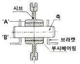
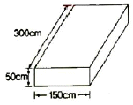

천장크레인운전기능사 (2011-02-13 기출문제)
1과목: 임의 구분
1. 구동차륜에 대한 설명 중 틀린 것은?
- 차륜직경이 2% 이상 마모되면 수리 교환하여야 한다.
- 좌우차륜의 직경차는 원치수의 0.2% 이내이다.
- 구동륜플랜지의 변형도는 수직에서 20° 이내이다.
- 플랜지의 두께가 20% 이내 마모되었다면 사용할 수 있다.
(정답률: 42%)

2. 천장크레인에 대한 설명 중 틀린 것은?
- 안전장치를 해제하고 작업을 해서는 안된다.
- 운전자의 시선은 주위를 넓게 바라보며 특히 진행 중인 방향의 앞쪽을 잘 살펴야 한다.
- 천장크레인은 수시로 정격하중의 11% 부하를 걸어서 시험 하중을 테스트해 보는 것이 좋다.
- 작업장의 구석진 곳에 있는 부하물을 들어 올릴 때는 경사지게 당겨 올리는 작업을 하지 않는 것이 좋다.
(정답률: 87%)
3. 천장크레인 중 권하 속도가 빠를수록 좋은 기중기는?
- 원료장입 크레인
- 강과 크레인
- 타이어 크레인
- 담금질 크레인
(정답률: 82%)
4. 드럼의 크기를 나타낸 것으로 가장 올바른 것은?
- 드럼크기는 가능한 한 로프의 전 길이를 1렬에 감을 수 있는 것으로 한다.
- 드럼크기는 가능한 한 로프의 전 길이를 2렬에 감을 수 있는 것으로 한다.
- 드럼크기는 로프의 전 길이를 3렬에 감을 수 있는 것으로 한다.
- 드럼크기는 로프의 유효길이를 2회 감을 수 있는 것으로 한다.
(정답률: 44%)
5. 크레인 혹의 개구부 벌어짐의 사용 한도는 원래 치수의 몇 % 까지 인가?
- 5%
- 10%
- 15%
- 50%
(정답률: 64%)
6. 횡행스토퍼를 설명한 것 중 틀린 것은?
- 재료는 경질고무나 스프링을 사용한다.
- 횡행차륜 정지용 스토퍼의 높이는 차륜 지름의 1/4 이상 되어야 한다.
- 고무 및 유압 등을 이용하여 완충시켜 주는 장치이다.
- 횡행스토퍼에는 자주 그리스를 도포하여 보호한다.
(정답률: 75%)
7. 시브(활차)의 회전에 대한 그림이다. 옳은 것은?

- 시브와 부시 사이에서 회전한다.
- 부시와 축 사이에서 회전한다.
- 축과 브라켓 사이에서 회전한다.
- 부시와 브라켓 사이에서 회전한다.
(정답률: 45%)
8. 권상장치의 권과 방지 기구는?
- 캠식 리밋 스위치
- 원심 분리 스위치
- 족답 스위치
- 와류 브레이크
(정답률: 72%)
9. 운전 중 전자브레이크에 이상 제동이 걸리는 경우 점검해야 할 것은?
- 전원 전압
- 전동기 회전수
- 콘트롤러
- 시브
(정답률: 52%)
10. 천장크레인 차륜의 플랜지 마모한도이다. 맞는 것은?
- 원칫수의 50%
- 원칫수의 30%
- 원칫수의 20%
- 원칫수의 10%
(정답률: 66%)
11. 크레인의 주행레일 설명으로 틀린 것은?
- 주행레일은 균열, 두부의 변형이 없을 것
- 레일 연결부의 엇갈림은 상하 0.5㎜ 이하일 것
- 레일 측면의 마모는 원래 규격 치수의 20% 이내일 것
- 레일 연결부의 틈새는 기타 크레인의 경우 5㎜이하일 것
(정답률: 61%)
12. 정격하중이 20,000kgf인 천장크레인의 훅(Hook)은 파괴하중 이 최소한 몇 kgf 이상인 것을 사용해야 하는가?
- 40,000kgf
- 60,000kgf
- 80,000kgf
- 100,000kgf
(정답률: 61%)
13. 속도제어 제동기는 어떤 때 속도제어를 하는가?
- 권상시
- 권하시
- 권상과 권하시
- 횡행과 권상시
(정답률: 68%)
14. 천장크레인에 대한 설명으로 적합하지 않은 것은?
- 천장크레인의 작업능력은 1회의 작업량 즉, 권상 톤수로 표시한다.
- 천장크레인 운전석은 매연, 분진 등에 대비한 밀폐형도 있다.
- 천장크레인 운전석이 바로 아래를 내려다 볼 수 있는 바닥 쪽에 유리창으로 된 형도 있다.
- 천장크레인의 주행 브레이크는 마그넷브레이크를 사용하여야 안전사고를 방지하기 위한 급제동력을 높인다.
(정답률: 67%)
15. 천장크레인용 마그네트 또는 스러스트 브레이크 휠 면의 요철은 몇 ㎜ 이상이 되면 수정 또는 교환하여야 하는가?
- 0.5㎜
- 1㎜
- 2㎜
- 3㎜
(정답률: 59%)
16. 천장크레인의 작업능력은 무엇으로 나타내는가?
- 작업속도
- 권상체적
- 작업시간
- 권상톤수
(정답률: 86%)
17. 크레인의 주행 및 횡행 장치의 확인 사항이 아닌 것은?
- 차륜과 레일과의 접촉 상태를 확인한다.
- 중추식 권과방지장치의 작동상태를 확인한다.
- 각 베어링의 주유 및 이상 소음을 확인한다.
- 동력 전달기어의 접촉 및 소음 상태를 확인한다.
(정답률: 47%)
18. 20~50ton의 용량을 가진 천장크레인에 일반적으로 많이 쓰이고 있는 거더(Girder)는?
- I형 거더
- 박스(Box) 거더
- 판(Flat)거더
- 트러스(Truss) 거더
(정답률: 68%)
19. 로프의 밀림현상이 일어나는 경우를 나타낸 것이다. 이 중 옳지 않은 것은?
- 도르래가 원활히 회전하지 않을 경우
- 드럼에 중첩되어 감겼을 경우
- 로프가 도르래와 잘 구성되어 있을 경우
- 로프가 도르래 플랜지의 접촉되어 있을 경우
(정답률: 79%)
20. 천장크레인의 브레이크에 관한 설명이다. 틀린 것은?
- 브레이크 휠과 라이닝의 수직, 수평폭은 1㎜ 이내라야 한다.
- 브레이크 휠 림(Rim)의 두께 마모 한도는 원래 치수의 40%이다.
- 브레이크 휠과 라이닝의 제동면의 온도는 약 300℃까지 이다.
- 브레이크 휠과 라이닝의 간격은 브레이크 개방시 브레이크 휠 직경의 1/150~1/200 이 적당하다.
(정답률: 48%)
2과목: 임의 구분
21. 천장크레인 운전실의 전압계가 멈추었을 때 점검해야 될 사항이 아닌 것은?
- 정전여부 확인
- 주 인입개폐기 점검
- 집전자의 이탈여부 검사
- 천장크레인 내 변압기 이상여부 점검
(정답률: 55%)
22. 기계요소 중 키(Key)에 대한 설명으로 틀린 것은?
- 축과 회전체를 일체로 하여 회전력을 전달시키는 기계요소이다.
- 축과 회전체의 원주방향으로의 이동이 가능하다.
- 재료는 축 재료보다 약간 강하다.
- 급유할 필요가 없다.
(정답률: 53%)
23. 크레인 권상전도기의 소요 동력(kW)을 구하는 식으로 맞는 것은? (단, 단위는 권상하중 : 톤, 속도 : m/min)
- ((정격하중＋훅(Hook)의 자중)×권상전동기효율) / (6.12×속도)
- ((정격하중＋훅(Hook)의 자중)×권상전동기효율) / 6.12
- ((정격하중＋훅(Hook)의 자중)×권상전동기효율) / (6.12＋속도)
- ((정격하중＋훅(Hook)의 자중)×속도) / (6.12×권상전동기 효율)
(정답률: 53%)
24. 볼트의 종류별 설명으로 옳은 것은?
- 관통볼트 : 자주 분해·결합하는 부분에 사용하여 양 끝에 나사산을 내고, 나사구멍에 끼우고 연결할 부품을 관통 시켜서 합친 후 너트로 조이는 것이다.
- 스테이 볼트 : T형의 홈에 볼트 머리를 끼우고 위치를 이동하면서 임의의 위치에 물체를 고정할 수 있는 볼트이다.
- 티(T) 볼트 : 부품을 일정한 간격으로 두고 고정할 때 사용하는 볼트이다.
- 아이 볼트 : 물건을 들어 올릴 때 사용하는 볼트이다.
(정답률: 70%)
25. 천장크레인을 사용하여 작업을 하는 때에 작업시작 전 점검 사항 중 매일 점검을 하기에 가장 곤란한 것은?
- 권과 방지장치, 브레이크 클러치 및 운전장치의 기능
- 주행로의 상축 및 트롤리가 횡행하는 레일의 상태
- 와이어로프가 통하고 있는 곳의 상태
- 과부하 방지장치의 조정 여부
(정답률: 58%)
26. 전동기의 발열원인으로 옳지 않은 것은?
- 부하가 크다.
- 속도가 빠르다.
- 사용빈도가 심하다.
- 저항기가 부적당하다.
(정답률: 48%)
27. 베어링의 온도상승 원인과 거리가 가장 먼 것은?
- 속도계수의 초과
- 과하중
- 베어링의 유격 과대
- 고점도 오일 사용
(정답률: 31%)
28. 가속도의 정의로 맞는 것은?
- 시간에 대한 거리의 변화율
- 속도에 대한 시간의 변화율
- 속도에 대한 변위의 변화율
- 시간에 대한 속도의 변화율
(정답률: 72%)
29. 기어에서 소음발생의 원인이 아닌 것은?
- 급유 과다
- 피치 오차가 클 때
- 부적당한 오일
- 아주 작은 백래시
(정답률: 81%)
30. 제어반 내부에 취부되지 않는 부품은?
- 누전 차단기(NFB)
- 전자 접촉기(Magnetic S/W)
- 한시 계전기(Timer)
- 한계 스위치(Limit S/W)
(정답률: 55%)
31. 크레인으로 화물을 들어 올릴 경우 옳지 않은 것은?
- 화물의 중심 위에 훅이 위치하도록 한다.
- 로프가 충분한 장력을 가질 때까지 서서히 감아올린다.
- 화물은 주행경로 및 안전을 고려한 높이에서 운반하도록 한다.
- 로프가 장력을 받을 때부터 주행을 시작한다.
(정답률: 86%)
32. 펜던트 스위치 설명으로 틀린 것은?
- 펜던트 스위치에서는 크레인의 비상정지용 누름 버튼과 각각의 작동종류에 따른 누름 버튼 등이 비치되어 있고 정상적으로 작동하여야 한다.
- 펜던트 스위치에 접속된 케이블은 꼬임이나 무리한 힘이 가해지지 않도록 보조 와이어로프 등으로 지지되어야 한다.
- 조작용 전기회로의 전압은 교류 대지전압 150V 이하 또는 직류 300V 이하이어야 한다.
- 펜던트 스위치 외함 구조가 절연제품이 아닐 경우에는 접지선을 생략할 수 있다.
(정답률: 79%)
33. 전기의 스파크(Spark) 발생 방지대책으로 틀린 것은?
- 접촉면을 매끄럽게 유지시킨다.
- 스위치류에 개폐는 아주 천천히 행한다.
- 스위치의 접촉면에 먼지나 이물질이 없도록 한다.
- 전원 차단시는 반드시 부하측으로부터 메인(Main) 측의 순서로 행한다.
(정답률: 49%)
34. 윤활유나 그리스 등이 묻어서는 안 되는 곳은?
- 와이어로프 및 드럼
- 베어링 및 하우징
- 체인 및 스프로켓
- 브레이크 드럼
(정답률: 62%)
35. 타워크레인은 풍속이 초당 몇 미터일 때 운전작업을 중지하여야 하는가?
- 40
- 30
- 20
- 10
(정답률: 39%)
36. 트롤리 와이어에는 감전재해 방지를 위해 통전중임을 알리는 적색의 표시등을 설치하여야 한다. 이때 통전표시등 설치장소로 가장 부적합한 곳은?
- 전동기 말단부
- 구간 스위치의 양쪽
- 트롤리 와이어의 말단부
- 트롤리 와이어에 전원이 인입되는 곳
(정답률: 54%)
37. 전기를 전달하기 어려운 물질은 어느 것인가?
- 전도재료
- 절연재료
- 도전재료
- 자성체
(정답률: 86%)
38. 전기장치에서 2차 저항기의 역할로 가장 알맞은 것은?
- 전동기에 과전류가 흐르는 것을 막아 전동기를 보호하는 역할을 한다.
- 전동기의 저항을 줄임으로써 전동기의 회전수를 일정하게 하는 역할을 한다.
- 권선형 유도전동기의 2차 회로에 부착되어 저항량을 조정함으로써 속도를 변속하는 역할을 한다.
- 농형 전동기에 저항이 너무 크므로 2차 저항기를 부착하여 저항량을 줄임으로써 안전하게 작동할 수 있는 역할을 한다.
(정답률: 76%)
39. 절연저항을 측정하는데 가장 적합한 것은?
- 옴 미터
- 오실로스코프
- 디지털 멀티테스터
- 메가 테스터
(정답률: 72%)
40. 소형 천장크레인의 횡행 모터축에 주로 사용하는 축이음으로 가장 적절한 것은?
- 플렉시블 커플링
- 체인 커플링
- 유니버셜 조인트
- 머프 커플링
(정답률: 33%)
3과목: 임의 구분
41. 크레인용 와이어로프에 심강을 사용하는 목적이 아닌 것은?
- 인장하중을 증가시킨다.
- 스트랜드의 위치를 올바르게 유지한다.
- 소선끼리의 마찰에 의한 마모를 방지한다.
- 부식을 방지한다.
(정답률: 47%)
42. 체인의 특징이 아닌 것은?
- 미끄럼이 없이 일정한 속도비를 얻을 수 있다.
- 내유·내습성이 크다.
- 내열성이 좋다.
- 충격에는 매우 약한다.
(정답률: 81%)
43. 크레인에서 줄걸이 와이어로프를 이용해 화물을 양중할 때 줄걸이 각도에 따라 와이어로프에 걸리는 하중이 다르다. 줄걸이 로프에 가장 장력이 작게 걸리는 각도는?
- 30°
- 60°
- 90°
- 120°
(정답률: 68%)
44. 그림과 같은 강괴를 들어 올릴 때 중량은? (단, 비중 7.85)

- 17,663kg
- 2,250kg
- 9,000kg
- 26,493kg
(정답률: 64%)
45. 와이어의 절단부분 양끝이 되풀리는 것을 방지하기 위하여 가는 철사로 묶는 것을 무엇이라고 하는가?
- 시징
- 킹크
- 스트랜드
- 파워로크
(정답률: 66%)
46. 줄걸이 작업시 섬유벨트의 장점이 아닌 것은?
- 취급이 용이하다.
- 제작이 간단하며 값이 많이 싸다.
- 하물을 손상시키지 않는다.
- 와이어로프나 체인보다 가볍다.
(정답률: 72%)
47. 신호방법 중 왼손을 오른손으로 감싸 2~3회 적게 흔들면서 호각을 길게 부는 신호 방법은?
- 물건걸기
- 정지
- 마그넷 붙이기
- 기다려라
(정답률: 56%)
48. 와이어로프의 직경의 허용차 표시로 맞는 것은?
- +7%~-7%
- +7%~0%
- 0%~7%
- 50%
(정답률: 37%)
49. 와이어로프의 소선의 질변화란?
- 로프가 킹크되는 경우
- 활차의 로프 홈이 나쁜 경우
- 로프가 마모되는 경우
- 물리적 원인으로 로프의 표면경화 또는 피로에 의한 변화
(정답률: 70%)
50. 체인의 종류에서 매다는 체인의 종류에 속하지 않는 것은?
- 숏링크 체인(Short Link Chain)
- 롱링크 체인(Long Link Chain)
- 스터드링크 체인(Stud Link Chain)
- 롤러 체인(Roller Chain)
(정답률: 63%)
51. 배터리 전해액처럼 강산, 알칼리 등의 액체를 취급할 때 가장 적합한 복장은?
- 연장갑 착용
- 면직으로 만든 옷
- 나일론으로 만든 옷
- 고무로 만든 옷
(정답률: 83%)
52. 산업안전보건에서 안전표지의 종류가 아닌 것은?
- 위험표지
- 경고표지
- 지시표지
- 금지표지
(정답률: 43%)
53. 다음 중 보호안경을 끼고 작업해야 하는 사항과 가장 거리가 먼 것은?
- 산소용접 작업시
- 그라인더 작업시
- 건설기계장비 일상점검 작업시
- 클러치 탈부착 작업시
(정답률: 73%)
54. 스패너 작업시 유의할 사항으로 틀린 것은?
- 스패너의 입이 너트의 치수에 맞는 것을 사용해야 한다.
- 스패너의 자루에 파이프를 이어서 사용해서는 안 된다.
- 스패너와 너트 사이에는 쐐기를 넣고 사용하는 것이 편리하다.
- 너트에 스패너를 깊이 물리도록 하여 조금씩 앞으로 당기는 식으로 풀고 조인다.
(정답률: 80%)
55. 가연성 액체, 유류 등 연소 후에 재가 거의 없는 화재는 무슨 급별 화재인가?
- A급
- B급
- C급
- D급
(정답률: 69%)
56. 산업재해의 통상적인 분류 중 통계적 분류를 설명한 것 중 틀린 것은?
- 사망 : 업무로 인해서 목숨을 잃게 되는 경우
- 중경상 : 부상으로 인하여 30일 이상의 노동 상실을 가져온 상해 정도
- 경상해 : 부상으로 1일 이상 7일 이하의 노동 상실을 가져온 상해 정도
- 무상해 : 사고 응급처치 이하의 상처로 작업에 종사하면서 치료를 받는 상해 정도
(정답률: 64%)
57. 전등 스위치가 옥내에 있으면 안 되는 경우는?
- 건설기계장비 차고
- 절삭유 저장소
- 카바이드 저장소
- 기계류 저장소
(정답률: 72%)
58. 해머작업시 안전수칙 설명으로 틀린 것은?
- 열처리 된 재료는 해머로 때리지 않도록 주의한다.
- 녹이 있는 재료를 작업할 때는 보호안경을 착용하여야 한다.
- 자루가 불안정한 것(쐐기가 없는 것 등)은 사용하지 않는다.
- 장갑을 끼고 시작은 강하게 점차 약하게 타격한다.
(정답률: 94%)
59. 기계운전 및 작업시 안전 사항으로 맞는 것은?
- 작업의 속도를 높이기 위해 레버 조작을 빨리한다.
- 장비의 무게는 무시해도 된다.
- 작업도구나 적재물이 장애물에 걸려도 동력에 무리가 없으므로 그냥 작업한다.
- 장비 승·하차시에는 장비에 장착된 손잡이 및 발판을 사용한다.
(정답률: 92%)
60. 물품을 운반할 때 주의할 사항으로 틀린 것은?
- 가벼운 화물은 규정보다 많이 적재하여도 된다.
- 안전사고 예방에 가장 유의한다.
- 정밀한 물품을 쌓을 때는 상자에 넣도록 한다.
- 약하고 가벼운 것을 위에 무거운 것을 밑에 쌓는다.
(정답률: 93%)